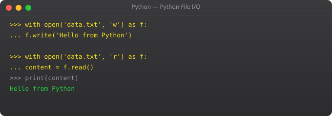

Knowing Python data structures superficially -- that lists exist, that dicts exist -- is enough to write beginner code. Using them well -- choosing a set for fast lookups, using Counter to count occurrences, knowing when to use deque instead of list -- is what professional Python looks like. This part covers the patterns you see in real codebases.
people = [
{"name": "Suraj", "age": 25, "city": "Mumbai"},
{"name": "Priya", "age": 28, "city": "Bangalore"},
{"name": "Raj", "age": 22, "city": "Delhi"}
]
# Sort by age
by_age = sorted(people, key=lambda p: p["age"])
print([p["name"] for p in by_age]) # [Raj, Suraj, Priya]
# Sort by multiple fields
by_city_age = sorted(people, key=lambda p: (p["city"], p["age"]))
# Filter
mumbai_people = [p for p in people if p["city"] == "Mumbai"]
# Remove duplicates preserving order
nums = [3, 1, 2, 1, 3, 4]
seen = set()
unique = [x for x in nums if not (x in seen or seen.add(x))]
print(unique) # [3, 1, 2, 4]from collections import defaultdict, Counter
# Count word frequencies
words = "the cat sat on the mat the cat".split()
counter = Counter(words)
print(counter.most_common(3)) # [(the, 3), (cat, 2), (sat, 1)]
# defaultdict -- no KeyError for missing keys
scores = defaultdict(list)
scores["math"].append(90)
scores["math"].append(85)
scores["science"].append(92)
# Merge dicts (Python 3.9+)
defaults = {"timeout": 30, "debug": False, "retries": 3}
overrides = {"timeout": 60, "debug": True}
config = defaults | overrides
print(config) # {timeout: 60, debug: True, retries: 3}required = {"Python", "Docker", "Kubernetes"}
have = {"Python", "Docker", "Linux"}
missing = required - have # {Kubernetes}
common = required & have # {Python, Docker}
all_s = required | have # All unique
# O(1) membership testing -- use set not list
valid_domains = {"gmail.com", "yahoo.com", "outlook.com"}
if "gmail.com" in valid_domains:
print("Valid domain")from collections import deque, namedtuple, OrderedDict
# deque: efficient queue (O(1) both ends)
queue = deque()
queue.append("first")
queue.append("second")
print(queue.popleft()) # first
# Stack with deque
stack = deque()
stack.append("page1")
stack.append("page2")
print(stack.pop()) # page2 (LIFO)
# namedtuple: tuple with named fields
Point = namedtuple("Point", ["x", "y"])
p = Point(3, 4)
print(p.x, p.y) # 3 4
print(p) # Point(x=3, y=4)List when order matters or you need index access. Set when you need unique values or fast O(1) membership testing. Converting a list to set removes duplicates in O(n).
sorted(people, key=lambda p: p["age"]). For descending: reverse=True. Multiple keys: key=lambda p: (p["city"], p["age"]).
Counter from collections automatically counts occurrences of each item. Counter(["a","b","a","c","a"]) gives Counter({a: 3, b: 1, c: 1}). Use .most_common(n) to get top n items.
Python 3.9+: merged = dict1 | dict2. Python 3.5+: {**dict1, **dict2}. Right-side values win for duplicate keys.
defaultdict from collections provides a default value for missing keys instead of raising KeyError. defaultdict(list) creates an empty list for any new key, making it perfect for grouping data.
In Part 7, we cover functions -- the most critical skill for writing reusable, maintainable Python.
← Back to Blogimport heapq
# Find top N items efficiently
numbers = [34, 12, 67, 5, 89, 23, 45, 78, 2, 56]
top_3 = heapq.nlargest(3, numbers) # [89, 78, 67]
bot_3 = heapq.nsmallest(3, numbers) # [2, 5, 12]
# Priority queue for task scheduling
tasks = []
heapq.heappush(tasks, (3, "low priority task"))
heapq.heappush(tasks, (1, "CRITICAL task"))
heapq.heappush(tasks, (2, "medium task"))
while tasks:
priority, task = heapq.heappop(tasks)
print(f"Executing (priority {priority}): {task}")from collections import ChainMap
defaults = {"timeout": 30, "retries": 3, "debug": False, "region": "us-east-1"}
env_config = {"timeout": 60, "debug": True}
cli_args = {"region": "ap-south-1"}
# cli_args overrides env_config overrides defaults
config = ChainMap(cli_args, env_config, defaults)
print(config["timeout"]) # 60 (from env_config)
print(config["region"]) # ap-south-1 (from cli_args)
print(config["retries"]) # 3 (from defaults)from itertools import groupby, chain, islice, product, combinations
from collections import Counter, defaultdict
# Group data by a field
students = [
{"name": "Suraj", "grade": "A"},
{"name": "Raj", "grade": "B"},
{"name": "Priya", "grade": "A"},
{"name": "Anita", "grade": "B"},
]
# Sort first, then group
students.sort(key=lambda s: s["grade"])
for grade, group in groupby(students, key=lambda s: s["grade"]):
names = [s["name"] for s in group]
print(f"Grade {grade}: {', '.join(names)}")
# Flatten nested lists
nested = [[1, 2], [3, 4], [5, 6]]
flat = list(chain.from_iterable(nested))
print(flat) # [1, 2, 3, 4, 5, 6]
# Process in batches of N
def batched(iterable, n):
it = iter(iterable)
while batch := list(islice(it, n)):
yield batch
for batch in batched(range(1, 25), 5):
print(f"Processing: {batch}")from dataclasses import dataclass, field
from typing import List
import heapq
@dataclass
class Student:
name: str
score: float
grade: str
students = [
Student("Suraj", 95.5, "A"),
Student("Raj", 87.0, "B"),
Student("Priya", 95.5, "A"),
Student("Anita", 72.0, "C"),
]
# Sort by score descending, then name ascending
sorted_s = sorted(students, key=lambda s: (-s.score, s.name))
for s in sorted_s:
print(f"{s.name}: {s.score} ({s.grade})")
# Top 3 by score
top3 = heapq.nlargest(3, students, key=lambda s: s.score)
print([s.name for s in top3])
# Group by grade
from itertools import groupby
by_grade = {}
for s in sorted(students, key=lambda x: x.grade):
grade = s.grade
by_grade.setdefault(grade, []).append(s.name)
print(by_grade)import sys
# List: loads everything into memory
squares_list = [x**2 for x in range(1_000_000)]
print(f"List size: {sys.getsizeof(squares_list):,} bytes") # ~8,000,000 bytes
# Generator: lazy, generates one at a time
squares_gen = (x**2 for x in range(1_000_000))
print(f"Generator size: {sys.getsizeof(squares_gen):,} bytes") # ~104 bytes
# Same results, but generator uses 99.999% less memory
total_gen = sum(squares_gen) # Sum without storing all values
# Use generators for: large files, database results, API pagination